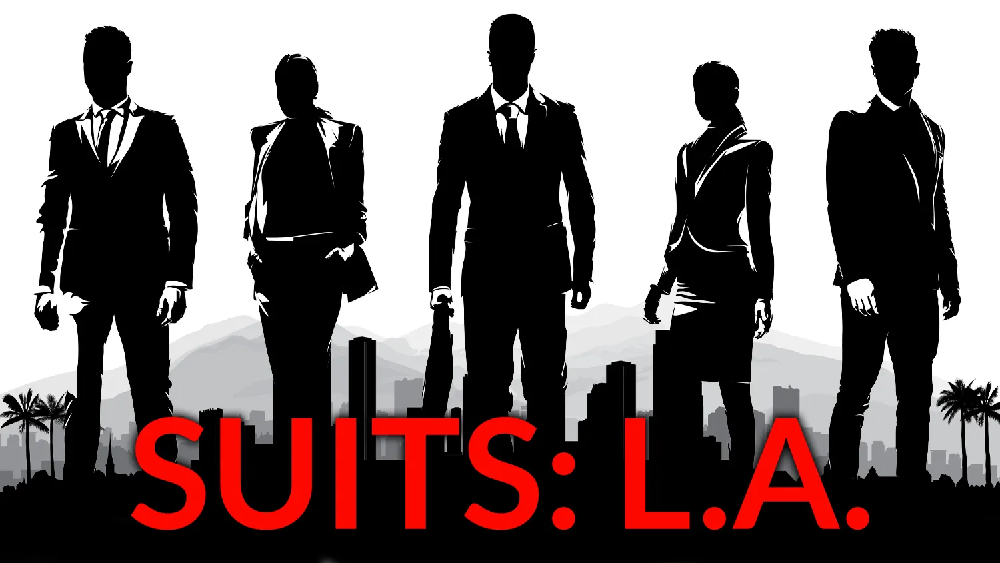
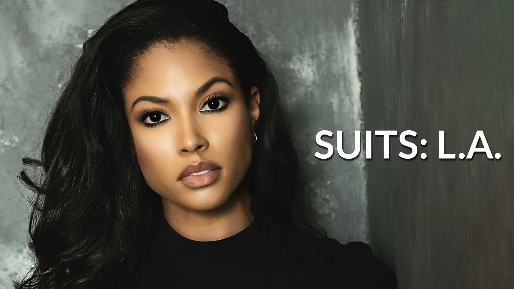

Spinoff
Speculation that a potential spinoff was in the works started in fall 2023, when Beatrice Springborn, president of Universal International Studios, spoke at entertainment industry conference Content London. There, she referred to the show as Suits L.A., which has now been confirmed as the show's official title.
Suits L.A. Cast
Suits: L.A. has cast several actors to bring the chemistry of the original series to the screen. Stephen Amell stars as Ted Black, a charismatic former prosecutor who co-founded an L.A. law firm with his old friend Stuart Lane. Josh McDermitt plays Stuart Lane, an energetic and powerful friend of Ted. Lex Scott Davis plays Erica Rollins, a savvy rising star at the firm.
When will it premeier ?
The show has been picked up to pilot with decisions yet to be made on series pickup. With NBCs 52-week scheduling strategy, this pilot if picked up to series could air later in the 2024-25 season or roll over to the 2025-26 season.
